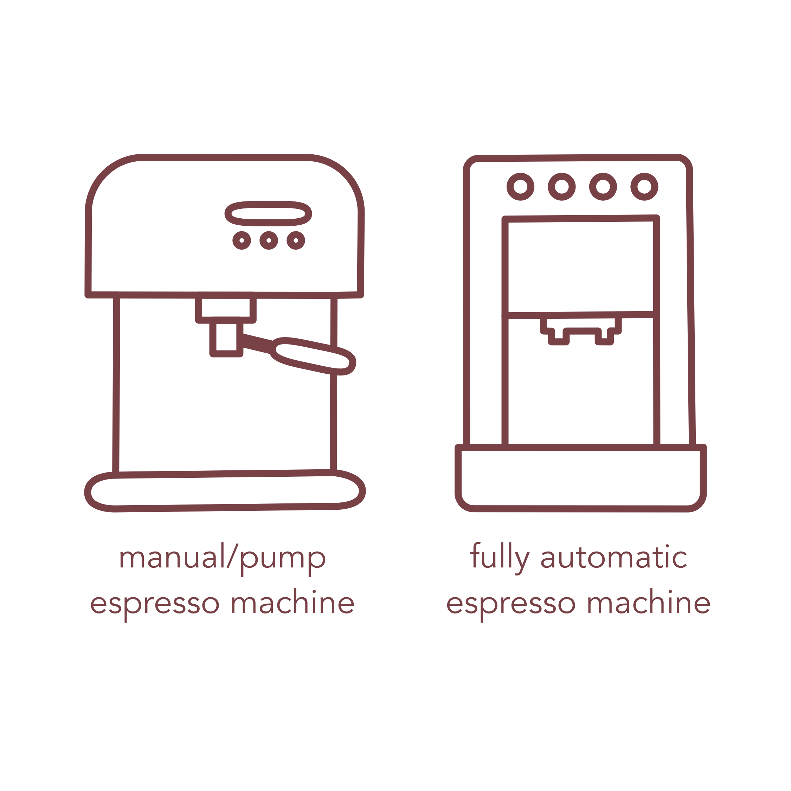
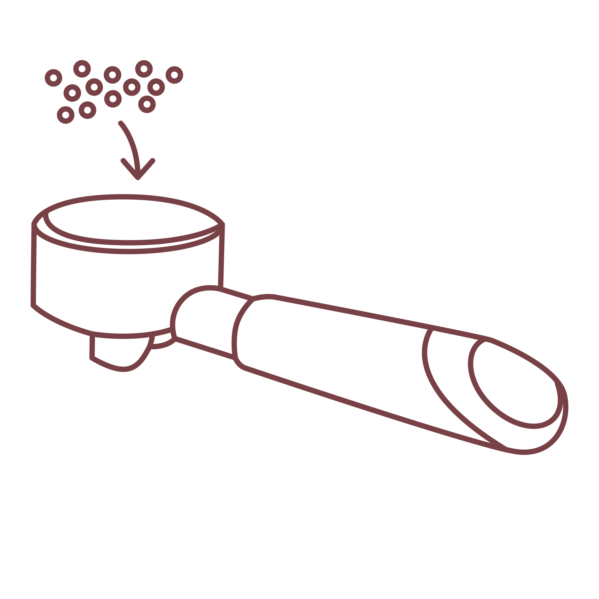
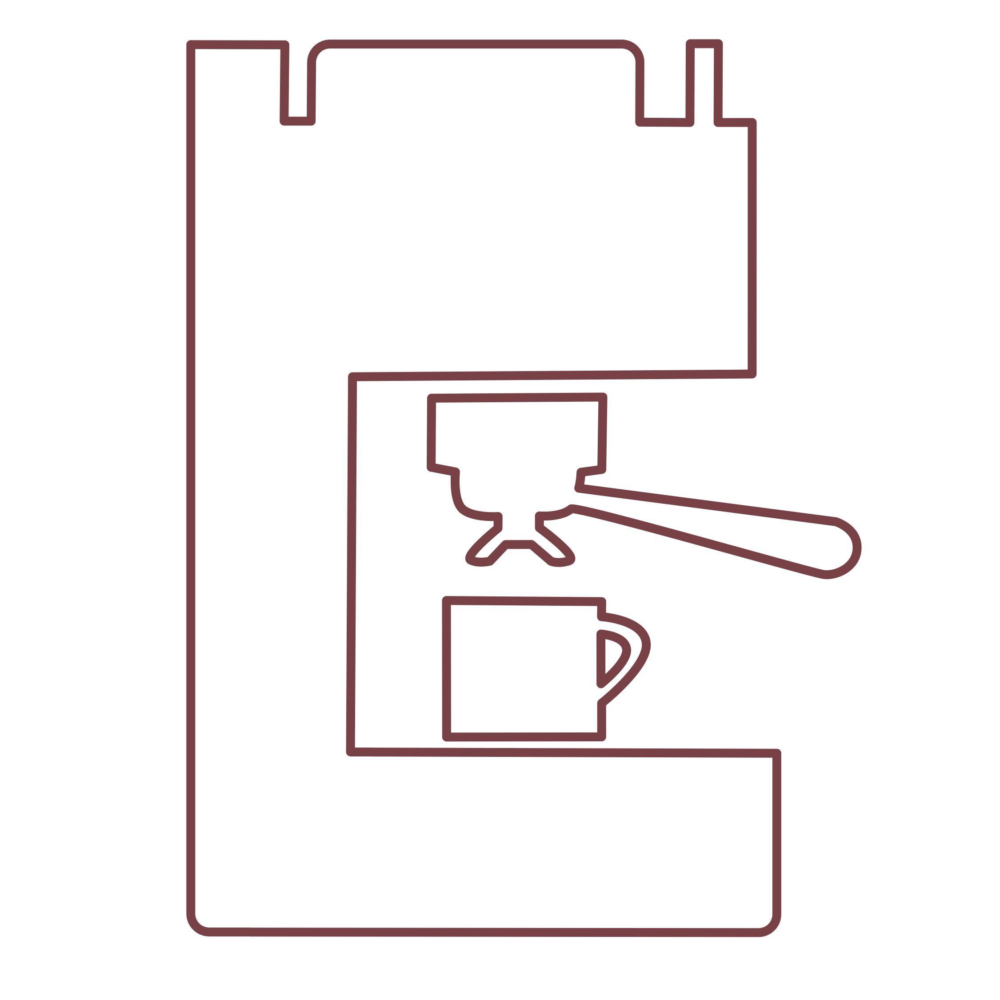

oroma
Coffee was founded in Oromo, Africa in 1XXX. It can be found all over the world and in different ways. Coffee was founded in Oromo, Africa in 1XXX. It can be found all over the world and in different ways. Coffee was founded in Oromo, Africa in 1XXX. It can be found all over the world and in different ways.
espresso machine (manual or automatic)
ground coffee (fine setting)
espresso tamper
Boil the water, making sure to have enough for your french press.
Add the ground coffee (2 tbsp coffee per 6 oz or 175 mL water) to the french press.
Let your boiling water slighlty cool, then pour in the desired amount of water in with the coffee grinds.
With a spoon, give the coffee and water a stir.
Without depressing the plunger yet, set the plunger on top of the grounds and set a timer for 4 minutes.
